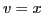
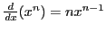

Next: Differentiation of a quotient Up: Rules for differentiating standard Previous: Differentiation of the product Contents Index
If the  factors in the above result are each equal to
factors in the above result are each equal to  , we get
, we get
When  this becomes  (equation (VIa) above).
We have so far proven equation (VI) only for the case when
 is a positive integer. In §5.15, however,
it will be shown that this formula holds true for any
value of
is a positive integer. In §5.15, however,
it will be shown that this formula holds true for any
value of  , and we shall make use of this general result now.
, and we shall make use of this general result now.
The derivative of a function with a constant exponent is equal to the product of the exponent, the function with the exponent diminished by unity, and the derivative of the function.